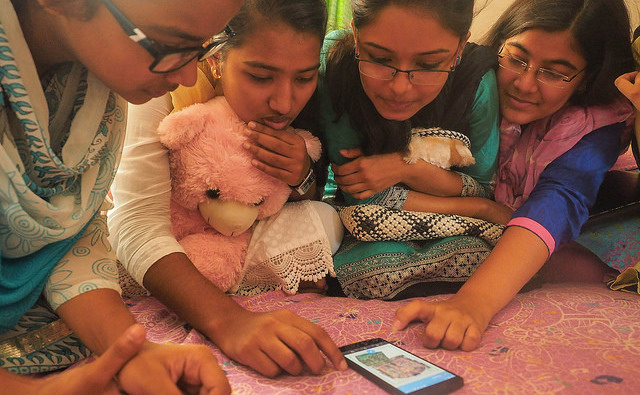
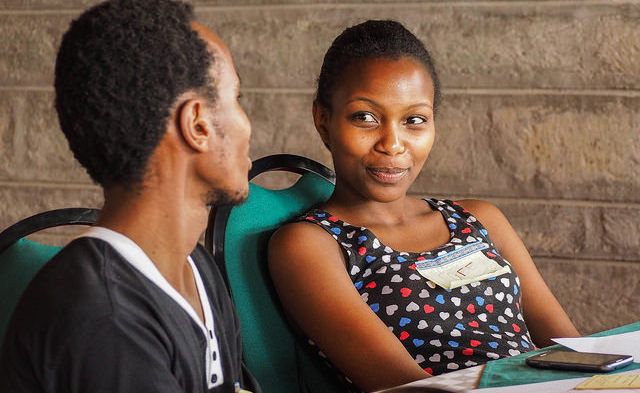
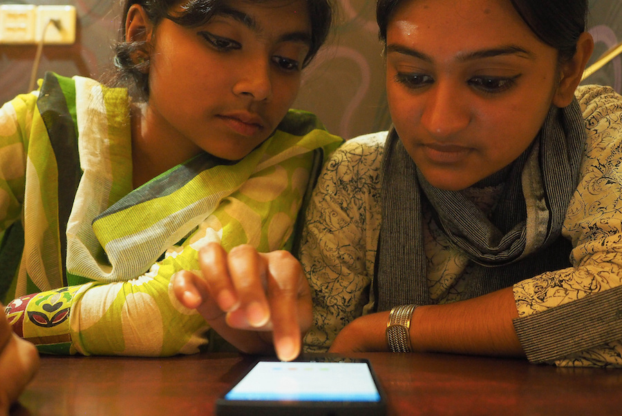

Read, Write, and Participate with Webmaker
Design a Story for the Web
Made by Laura and remixed for Maker Party by Bobby.
Learners will ideate, sketch and structure a story to create with Webmaker. By brainstorming offline, learners will start thinking about the different ways to create for the Web and get more comfortable with the idea of creating their own content.
2-3 hours
-
Preparation
In this activity, participants will be able to design a project they would like to create and share on Webmaker. This activity happens offline, and prompts the learners/makers to think about...
- What type of content to create and why,
- How best to structure and convey a message, and
- How to leverage technology, media, mobile phones and the building blocks of the Web to share a story.
-
20
minIntroduction
Welcome the participants and invite them to sit in small groups or in a large circle. In some cultures, participants might be more shy to talk in front of a big audience, so feel free to adapt this setting to smaller groups and do what you believe is best.
In order to get to know each others, each participant will say:
"My name is ________, I like to ______ and the story that I like to share is ______."
For example, "My name is Flower, I like to be absurd and the story that I like to share is about the time I traveled through India and met many cool people and how it taught me some travel hacks."After this first round, initiate a short discussion about the Web and content creation by asking, "What is your favorite thing about the Web? Have you ever created content on the Web?" While you prompt participants to think about the way they participate on the Web, make sure you share back your own experience and the reason why you and/or Mozilla care about this.
You might then say, "Today, we will each create a paper prototype of a story we would like to share on the web, with some material that we have here. The goal is to learn how to design for the web and structure a great story for the people you share it with."
Research Contribution Opportunity
Get each participant to fill out the Participant Profile form. This information is very useful in providing feedback and insights to the product, research, and development teams that design the Webmaker experience.
-
75
minCreate your own content
Get the group thinking by saying, "First, think about a story you would like to share. Think about how to leverage mobile phones to communicate this story."
As a facilitator, you can write the some related questions on a paper or put them on the wall if you can.
Some things you might say or write down:
- Would you like to make something fun? Maybe for friends and family?
- Would you like to create something useful? Who would it be useful for? e.g. "I will make a story about how to apply to Dhaka University. It will be very useful because it will be written by a student, for a student, in Bangla, and no one does that today."
- It could also be inspirational, artistic, or even gastronomic. You can create anything, but it's good to start with something you care about.
Give participants the material at disposal and guide them through the constraints:
- Use the A5 cards to create your story. You can move them around but you cannot go outside of the cards. Each A5 represents a page. Be careful not to put too much on 1 card, it is the size of a mobile screen.
- Use the magazines to represent pictures, or types etc. Anything that you can find on the Web, you can find it here in this magazine.
- Use the rope or masking tape to represent links between pages. For example, if you want to direct people from this page to this other page (show in the same time) then you can use the rope to represent the connection.
- On each page, you can use text, images and links.
It’s better here to show participants what you mean while you explain.
 Laura de Reynal -
60
minLet's make!
During the next hour, participants will make something on paper, in small groups, in pairs or individually. Feel free to adjust according to the atmosphere and the number of people.
For the first 15 minutes while people are working, make something as well to demonstrate the activity. Then you can move around and see how the different groups are doing. Here are some questions to help you facilitate that part and prompt reflections:
 Laura de Reynal- What are you making?
- Why did you choose this project?
- Who is it for?
- What is difficult?
- What is cool? Easy?
- Anything surprising?
-
20
minShare back and reflect
Each participant or groups shares what they have made with the bigger group and answers the following questions:
- What did you make?
- How did your idea change from the beginning to the end?
- How did you feel about creating your own story? What was hard? What was easy?
- Do you feel like you learned anything about yourself while doing this design?
- Do you think you could do this on the web today? Would you want to?
While participants engage in this discussion based on the story they have created, feel free to share some experience and tie it back with the first discussion from the opening of the session.
 Laura de Reynal
Laura de Reynal
-
10
minProvide Feedback
Thank the participants and ask them if they would like to make something with Webmaker. Direct them to beta.webmaker.org to download the app, and mzl.la/feedback to give us feedback.
If anybody has more direct feedback to give the Webmaker team, feel free to contact us:
 Laura de Reynal- Email: help@webmaker.org
- Twitter: @webmaker
- Facebook: facebook.com/mozillawebmaker
- GitHub: github.com/mozilla/webmaker-androidr
- IRC: irc.mozilla.org, #webmaker